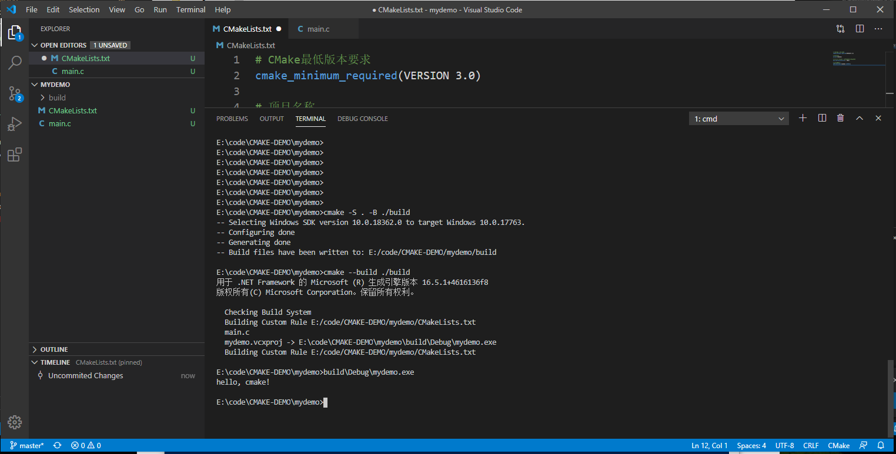
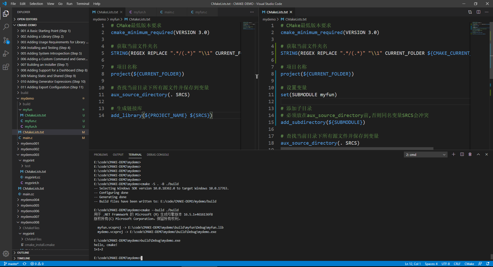
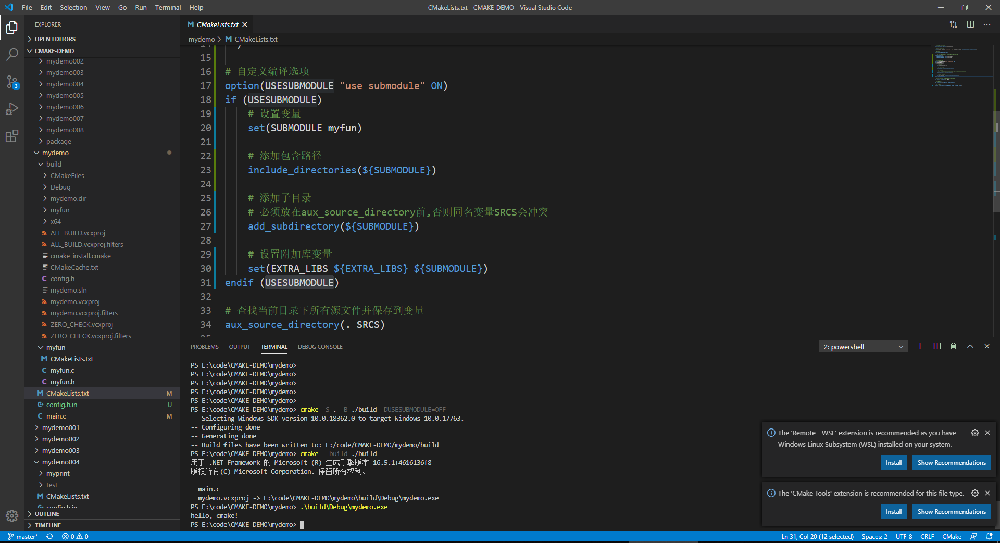

CMake入门
CMake是一个跨平台的安装(编译)工具，可以用简单的语句来描述所有平台的安装(编译过程)。能够输出各种各样的makefile或者project文件，能测试编译器所支持的C++特性,类似UNIX下的automake。只是 CMake的组态档取名为CMakeLists.txt。Cmake并不直接建构出最终的软件，而是产生标准的建构档(如 Unix的Makefile或Windows Visual C++的projects/workspaces)，然后再依一般的建构方式使用。这使得熟悉某个集成开发环境(IDE)的开发者可以用标准的方式建构他的软件，这种可以使用各平台的原生建构系统的能力是CMake和SCons等其他类似系统的区别之处。
至于出现一份代码，到处编译，但是编译不过就有可能是代码的问题了。

代码仓库
https://github.com/gongluck/CMake-Demo.git
简单项目
创建目录mydemo，再在mydemo目录中创建CMakeLists.txt和main.c两个文件。
//main.c
#include <stdio.h>
int main()
{
printf("hello, cmake!\n");
return 0;
}
#CMakelists.txt
# CMake最低版本要求
cmake_minimum_required(VERSION 3.0)
# 项目名称
project(mydemo)
# 查找当前目录下所有源文件并保存到变量
aux_source_directory(. SRCS)
# 指定生成目标
add_executable(mydemo ${SRCS})
之后执行命令：
cmake -S . -B ./build
cmake --build ./build
第一条命令是生成目标平台的项目，将生成使用系统上默认的编译套件的工程。-S后面的参数是CMake工程CMakeLists.txt文件所在目录，-B后面的参数是将要生成的目标平台项目文件存放的目录。 第二条命令是构建项目，当然也可以通过其他工具打开项目构建或者执行make命令等。–build是CMake程序构建的命令，后面的参数是需要构建的项目的路径。

增加子模块
创建目录myfun，再在myfun目录中创建CMakeLists.txt、myfun.h和myfun.c三个文件。
//myfun.h
#ifndef __MYFUN_H__
#define __MYFUN_H__
int myfun(int a, int b);
#endif//__MYFUN_H__
//myfun.c
#include "myfun.h"
int myfun(int a, int b)
{
return a+b;
}
#CMakelists.txt
# CMake最低版本要求
cmake_minimum_required(VERSION 3.0)
# 获取当前文件夹名
STRING(REGEX REPLACE ".*/(.*)" "\\1" CURRENT_FOLDER ${CMAKE_CURRENT_SOURCE_DIR})
# 项目名称
project(${CURRENT_FOLDER})
# 查找当前目录下所有源文件并保存到变量
aux_source_directory(. SRCS)
# 生成链接库
add_library(${PROJECT_NAME} ${SRCS})
子模块中的
# 生成链接库
add_library(${PROJECT_NAME} SHARED ${SRCS})
SHARED可以省略，省略后相当于STATIC。
mydemo下的CMakeLists.txt和main.c也要做修改。然后，重新构建生成。
//main.c
#include <stdio.h>
#include "myfun/myfun.h"
int main()
{
printf("hello, cmake!\n");
printf("1+1=%d\n", myfun(1, 1));
return 0;
}
#CMakelists.txt
# CMake最低版本要求
cmake_minimum_required(VERSION 3.0)
# 获取当前文件夹名
STRING(REGEX REPLACE ".*/(.*)" "\\1" CURRENT_FOLDER ${CMAKE_CURRENT_SOURCE_DIR})
# 项目名称
project(${CURRENT_FOLDER})
# 设置变量
set(SUBMODULE myfun)
# 添加子目录
# 必须放在aux_source_directory前,否则同名变量SRCS会冲突
add_subdirectory(${SUBMODULE})
# 查找当前目录下所有源文件并保存到变量
aux_source_directory(. SRCS)
# 指定生成目标
add_executable(${PROJECT_NAME} ${SRCS})
# 添加链接库
target_link_libraries(${PROJECT_NAME} ${SUBMODULE})
主模块中主要改动在
# 添加子目录
# 必须放在aux_source_directory前,否则同名变量SRCS会冲突
add_subdirectory(${SUBMODULE})
# 添加链接库
target_link_libraries(${PROJECT_NAME} ${SUBMODULE})
add_subdirectory命令添加子模块目录，CMake会自动执行子模块中的CMakelists.txt。 target_link_libraries命令是将子模块链接到主模块。

自定义编译选项
主模块的CMakelists.txt修改成：
#CMakeLists.txt
# CMake最低版本要求
cmake_minimum_required(VERSION 3.0)
# 获取当前文件夹名
STRING(REGEX REPLACE ".*/(.*)" "\\1" CURRENT_FOLDER ${CMAKE_CURRENT_SOURCE_DIR})
# 项目名称
project(${CURRENT_FOLDER})
# 加入一个配置头文件用于处理 CMake 对源码的设置
configure_file(
${PROJECT_SOURCE_DIR}/config.h.in
${PROJECT_BINARY_DIR}/config.h
)
# 自定义编译选项
option(USESUBMODULE "use submodule" ON)
if (USESUBMODULE)
# 设置变量
set(SUBMODULE myfun)
# 添加包含路径
include_directories(${SUBMODULE})
# 添加子目录
# 必须放在aux_source_directory前,否则同名变量SRCS会冲突
add_subdirectory(${SUBMODULE})
# 设置附加库变量
set(EXTRA_LIBS ${EXTRA_LIBS} ${SUBMODULE})
endif (USESUBMODULE)
# 查找当前目录下所有源文件并保存到变量
aux_source_directory(. SRCS)
# 指定生成目标
add_executable(${PROJECT_NAME} ${SRCS})
# 添加链接库
target_link_libraries(${PROJECT_NAME} ${EXTRA_LIBS})
创建config.h.in文件并输入：
#cmakedefine USEMYPRINT
option命令可以设置自定义编译选项，configure_file命令用于设置配置文件。生成目标工程时，目标目录会生成一个config.h文件。config.h中，如果USESUBMODULE选项被打开就为：
#define USESUBMODULE
否则是：
/* #undef USESUBMODULE */
main.c也需要调整：
//main.c
#include <stdio.h>
#ifdef USESUBMODULE
#include "myfun.h"
#endif//USESUBMODULE
int main()
{
printf("hello, cmake!\n");
#ifdef USESUBMODULE
printf("1+1=%d\n", myfun(1, 1));
#endif//USESUBMODULE
return 0;
}
CMake打开选项的命令：
cmake -D[宏名]=[宏值]
所以，开关USESUBMODULE选项使用：
cmake -S . -B ./build -DUSESUBMODULE=ON
cmake -S . -B ./build -DUSESUBMODULE=OFF
